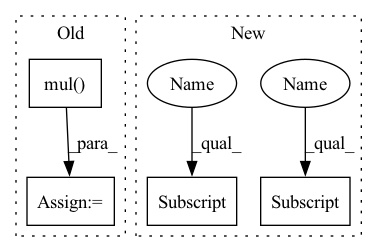

Pattern ID :26064
Before Change
reset_edge = self._create_edge(node, reset_node)
reset_edge_slice = reset_edge.get_edge_slice()
reset_gate_output = self._pass_through_reset_gate(messages, node, reset_edge, node_features)
messages_from_the_other_neighbors += to.mul( reset_gate_output, messages[reset_edge_slice])
return self.u_gru_current_memory_message[edge_slice].matmul(messages_from_the_other_neighbors)
def _pass_through_reset_gate(self,
messages: to.Tensor,After Change
return self.u_gru_current_memory_message[edge_slice].matmul(sum([to.mul(to.sigmoid(
to.add(
to.add(self.w_gru_update_gate_features[edge_slice].matmul(node_features[node.node_id]),
self.u_gru_update_gate[edge_slice].matmul(messages[node.node_id, reset_node_index] )),
self.b_gru_update_gate)).long(), messages[node.node_id, reset_node_index] )
for reset_node_index in neighbors_slice]))
def _pass_through_reset_gate(self,In pattern: SUPERPATTERN
Frequency: 3
Non-data size: 4
Instances Fragment ID: 78661640
Project Name: kovanostra/message-passing-neural-network
Commit Name: 46b48a64ed3b792489f1ffde06ae212a7af5471a
Time: 2020-05-02
Author: kovanostra@gmail.com
File Name: message_passing_nn/model/graph_encoder.py
M Class Name: GraphEncoder
N Class Name: GraphEncoder
M Method Name: _keep_or_reset_messages(5)
N Method Name: _keep_or_reset_messages(6)
M Parent Class: nn.Module
N Parent Class: nn.Module
M File Name: message_passing_nn/model/graph_encoder.py
N File Name: message_passing_nn/model/graph_encoder.py
M Start Line: 198
M End Line: 208
N Start Line: 203
N End Line: 210
Before Change
if not os.path.exists(self.image_save_path):
os.makedirs(self.image_save_path)
fake_images = fake_images.mul( 0.5) .add(0.5).cpu()
image_grid = utils.make_grid(fake_images, nrow=self.save_row_number)
utils.save_image(image_grid, os.path.join(self.image_save_path, "{}_fake_images.png".format(self.cfg.PROJECT_NAME)))
After Change
scores = self.D(fake_images).flatten()
// use images which have high scores top self.save_number
scores, indices = torch.sort(scores, descending=True)
best_indices = indices[:self.save_number]
worst_indices = indices[-self.save_number:]
best_fake_images = fake_images[best_indices]
worst_fake_images = fake_images[worst_indices]
Fragment ID: 78661641
Project Name: luzhixing12345/anime-wgan
Commit Name: e567864ac73320dd9322f7f89e7358a9d822750f
Time: 2022-05-12
Author: luzhixing12345@163.com
File Name: model/BaseModule.py
M Class Name: BasicGAN
N Class Name: BasicGAN
M Method Name: generate_images(1)
N Method Name: generate_images(1)
M Parent Class: nn.Module
N Parent Class: nn.Module
M File Name: model/BaseModule.py
N File Name: model/BaseModule.py
M Start Line: 86
M End Line: 94
N Start Line: 90
N End Line: 114
Before Change
p, q = self.build_cross(infeature)
pair_wise_inter = torch.mul( p, q) // [batch_size, num_pairs, emb_dim]
// get r(Fi, Fj), [batch_size, num_pair, emb_dim]
batch_size = infeature.shape[0]After Change
for i in range(self.num_features - 1):
for j in range(i + 1, self.num_features):
Fi, Fj = self.feature2field[i], self.feature2field[j]
fwfm_inter.append(infeature[:, i] * infeature[:, j] * r[:, Fi, Fj])
fwfm_inter = torch.stack(fwfm_inter, dim=1)
fwfm_inter = torch.sum(fwfm_inter, dim=1) // [batch_size, emb_dim]
fwfm_inter = self.dropout_layer(fwfm_inter) Fragment ID: 78661642
Project Name: rucaibox/recbole
Commit Name: 03f9eefe3c1268c9b20fe6eda11199446e5951c5
Time: 2020-10-14
Author: xinyanruc@126.com
File Name: recbox/model/context_aware_recommender/fwfm.py
M Class Name: FwFM
N Class Name: FwFM
M Method Name: fwfm_layer(2)
N Method Name: fwfm_layer(2)
M Parent Class: ContextRecommender
N Parent Class: ContextRecommender
M File Name: recbox/model/context_aware_recommender/fwfm.py
N File Name: recbox/model/context_aware_recommender/fwfm.py
M Start Line: 76
M End Line: 85
N Start Line: 95
N End Line: 104
Before Change
reset_edge = self._create_edge(node, reset_node)
reset_edge_slice = reset_edge.get_edge_slice()
reset_gate_output = self._pass_through_reset_gate(messages, node, reset_edge, node_features)
messages_from_the_other_neighbors += to.mul( reset_gate_output, messages[reset_edge_slice])
return self.u_gru_current_memory_message[edge_slice].matmul(messages_from_the_other_neighbors)
def _pass_through_reset_gate(self,
messages: to.Tensor,After Change
return self.u_gru_current_memory_message[edge_slice].matmul(sum([to.mul(to.sigmoid(
to.add(
to.add(self.w_gru_update_gate_features[edge_slice].matmul(node_features[node.node_id]),
self.u_gru_update_gate[edge_slice].matmul(messages[node.node_id, reset_node_index] )),
self.b_gru_update_gate)).long(), messages[node.node_id, reset_node_index] )
for reset_node_index in neighbors_slice]))
def _pass_through_reset_gate(self, Fragment ID: 78661627
Project Name: kovanostra/message-passing-neural-network
Commit Name: 46b48a64ed3b792489f1ffde06ae212a7af5471a
Time: 2020-05-02
Author: kovanostra@gmail.com
File Name: message_passing_nn/model/graph_encoder.py
M Class Name: GraphEncoder
N Class Name: GraphEncoder
M Method Name: _keep_or_reset_messages(5)
N Method Name: _keep_or_reset_messages(6)
M Parent Class: nn.Module
N Parent Class: nn.Module
M File Name: message_passing_nn/model/graph_encoder.py
N File Name: message_passing_nn/model/graph_encoder.py
M Start Line: 198
M End Line: 208
N Start Line: 203
N End Line: 210